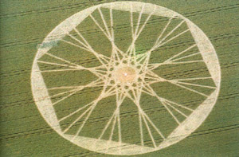

(ou )
Le crop circle apparu ce mois-là
A Perigny (Charente Maritime), 1 témoin à la barre de son voilier observe 1 lueur intense
qui descend rapidement pendant , se stabilise quelques instants avant de repartir très vite à
l'horizontale pour disparaître en . Le témoin appelle ses 2 coéquipiers qui dormaient pour leur
faire part de son observation lorsqu'ils sont témoins d'un 2nd phénomène en forme de losange jaune ocre
avec des lumières sur les sommets. L'objet se déplaçait très rapidement à la hauteur des nuages et à disparu au bout
de
SEPRA: PAN classé
D.
Sortie aux Etats-Unis du film "MIB" (Men In
Black) produit par Steven Spielberg.
La sonde Mars Pathfinder se pose sur la planète rouge avec le robot Sojourner.
(ou ) Près de Margut (Ardennes), une
dizaine de témoins répartis dans plusieurs communes observent des phénomènes lumineux variés composés de formes
ovoïdes, de lumières tournant à grande vitesse ou se déplaçant latéralement L'enquête montrera qu'il s'agit probablement de l'observation sur le plafond nuageux d'effets produits par un projecteur laser installé
dans un bal privé d'une commune située à quelques km. En fonctin des conditions météorologiques, ces phénomènes peuvent être visibles à 8 ou 10 kmSEPRA: PAN classé
B.
Le crop circle apparu le 14 à Cley Hill

Apparition d'un crop circle
(ci-contre) mesurant près de 800 m de diamètre à Cley Hill.
A Cholet (Maine-et-Loire), un témoin
chez lui observe le passage au-dessus de sa maison d'un engin sombre volant à une altitude estimée d'environ 15 m et
avec 3 feux fixes blancs. La vitesse de l'engin est lente et l'observation a duré une dizaine de mn. Un
bourdonnement sourd a été entendu au passage de cet objet. La mère du jeune témoin a également observé le phénomène
en précisant que les feux étaient rouges et non blancs La route suivie par l'objet est fréquentée par de nombreux avions, il n'est pas impossible que l'observation soit celle d'un aéronef genre ULM mais aucun élément ne permet de vérifier cette thèse et cette observation reste classée inexpliquéeSEPRA: PAN classé
D.